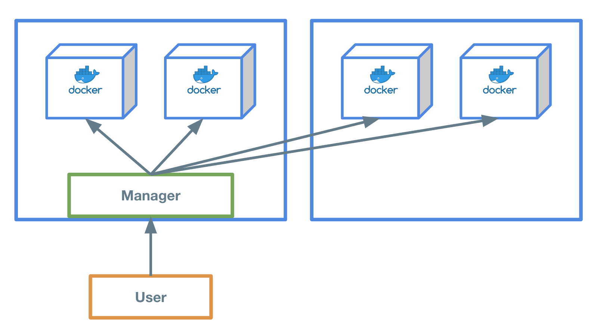
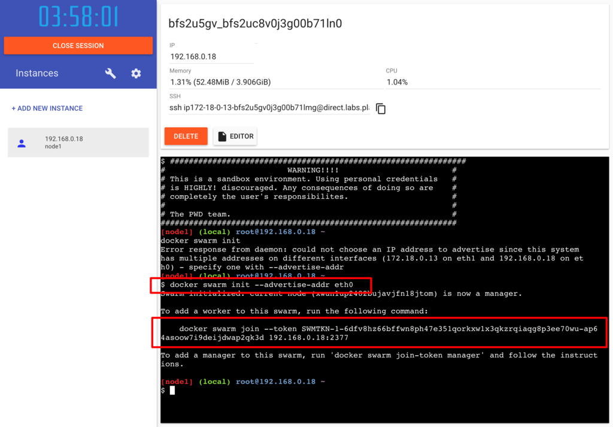
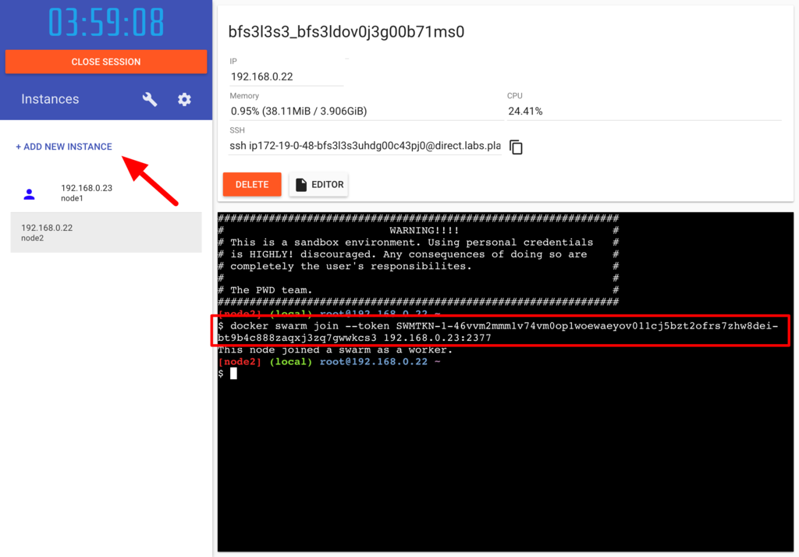
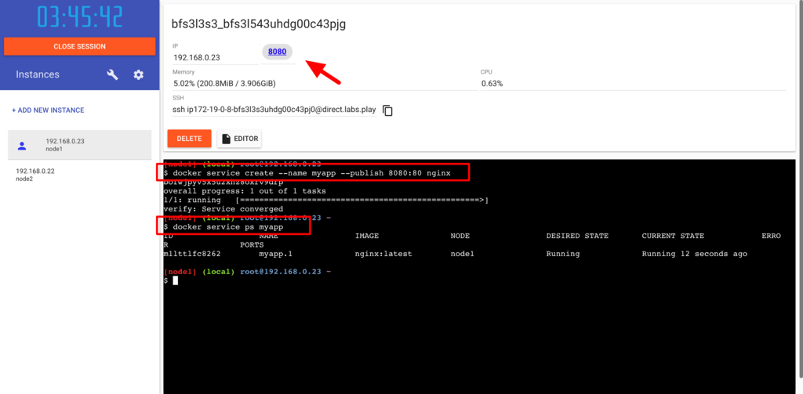
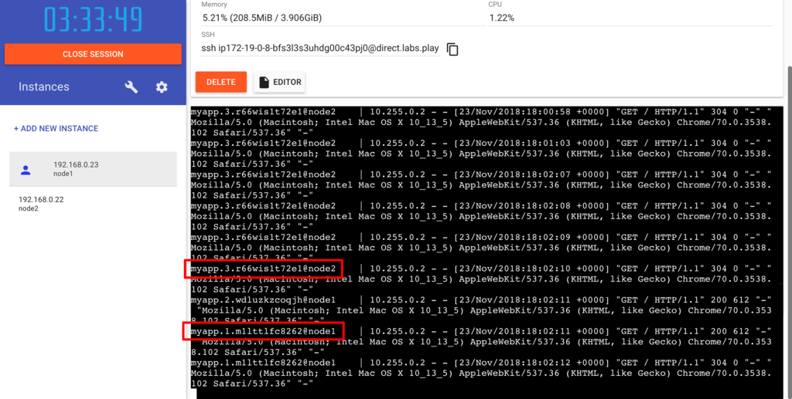

ハンズオン
 Play with Dockerで上記の図のような構成のSwarmを構築してみましょう。
Play with Dockerへログイン¶
まずはWeb上でDockerコマンドを実行することができる環境を手に入れるため、Play with Dockerへログインします。 https://labs.play-with-docker.com/
Play with DockerではSwarmを構築するために必要な環境(Netowrkなど)がセットアップされているため、簡単に構築することができます。
マネージャーを起動¶

まずは $ docker swarm init --advertise-addr eth0 でSwarmマネージャーを起動します。
$ docker swarm init --advertise-addr eth0 Swarm initialized: current node (hfvdg1iicbivnh75bex7tb219) is now a manager. To add a worker to this swarm, run the following command: docker swarm join --token SWMTKN-1-0xgun1ud0eb95m34fu7d6fkxu02f5a6soxngk2r7xth3zc6ygo-d9wd80asq1dg7szw7ltjs4zj1 192.168.0.8:2377 To add a manager to this swarm, run 'docker swarm join-token manager' and follow the instructions.
docker swarm join --token <TOKEN> 192.168.0.8:2377 と出力されました。
これはワーカーノードをマネージャーへ登録させるために必要になるので控えておきましょう。
現在Swarmが管理しているノード(マシンのことをノードと呼びます。)を確認しましょう。
$ docker node ls でSwarmのノードを確認することができます。
現在はマネージャーのノード1が1台起動されているだけなので、以下のように表示されます。
$ docker node ls ID HOSTNAME STATUS AVAILABILITY MANAGER STATUS ENGINE VERSION hfvdg1iicbivnh75bex7tb219 * node1 Ready Active Leader 18.09.4
ワーカーノードを起動¶

新しいくワーカーノード用のインスタンスを起動します。
起動したインスタンスをマネージャーへワーカーノードとして登録します。
$ docker swarm join --token SWMTKN-1-0xgun1ud0eb95m34fu7d6fkxu02f5a6soxngk2r7xth3zc6ygo-d9wd80asq1dg7szw7ltjs4zj1 192.168.0.8:2377 This node joined a swarm as a worker.
マネージャーとして起動したインスタンスへ戻り、ノードが2台存在することを確認します。
基本的にユーザーはマネージャーへ命令を行い、マネージャーがその命令を実行します。
$ docker node ls ID HOSTNAME STATUS AVAILABILITY MANAGER STATUS ENGINE VERSION hfvdg1iicbivnh75bex7tb219 * node1 Ready Active Leader 18.09.4 l9qil0udtt28jowb8bor455nr node2 Ready Active 18.09.4
Dockerを起動する¶

"myapp" というサービス名でnginxのDockerイメージを起動してみましょう。
以下のコマンドでマネージャーへnginxを起動するよう指示を出します。
$ docker service create --name myapp --publish 8080:80 nginx 1qso6t53bxkp84p29vwzcmdd4 overall progress: 1 out of 1 tasks 1/1: running [==================================================>]
Play with Dockerのコンソール上へ8080ポートが表示されました。
実際にアクセスしてnginxが起動していることを確認してみましょう。
現在起動しているDockerの状態は docker service ps <サービス名> で確認することができます。
"myapp"というサービス内にnginxコンテナが1台起動していることを確認しましょう。
$ docker service ps myapp ID NAME IMAGE NODE DESIRED STATE CURRENT STATE ERROR PORTS ns7uyza9usea myapp.1 nginx:latest node1 Running Running 6 minutes ago
Dockerコンテナを複数起動する¶
往々にしてプロダクトの成長とともにサーバー(/コンテナ)は1台だけでは足りなくなってきます。
Swarmでは簡単に複数台のコンテナを起動することが可能です。
現在は1台のコンテナが1台のノード上に起動されています。これを4台に増やしてみましょう。
マネージャーで以下のコマンドを実行します。
$ docker service update myapp --replicas 4 myapp overall progress: 4 out of 4 tasks 1/4: running [==================================================>] 2/4: running [==================================================>] 3/4: running [==================================================>] 4/4: running [==================================================>] verify: Service converged
コンテナが4台起動されていることを確認しましょう。
$ docker service ps myapp ID NAME IMAGE NODE DESIRED STATE CURRENT STATE ERROR PORTS ns7uyza9usea myapp.1 nginx:latest node1 Running Running 13 minutes ago e16zdn7xs557 myapp.2 nginx:latest node2 Running Running 4 minutes ago 4inve40nnh8d myapp.3 nginx:latest node2 Running Running 4 minutes ago f35de9f7bswd myapp.4 nginx:latest node1 Running Running 4 minutes ago
"NODE"カラムを見てみるとnode1とnode2にまたがってコンテナが配置されていることがわかります。
ログの確認¶

実際にアクセスが各コンテナへ振り分けられているか、ログを確認してみましょう。
以下のコマンドを実行し、nginxへアクセスを行うことでログが表示されます。
nginxへアクセスが有ると、行の先頭にコンテナの名前とノードが表示されます。
$ docker service logs -f myapp myapp.2.e16zdn7xs557@node2 | 10.255.0.2 - ... myapp.3.4inve40nnh8d@node2 | 2019/04/0 ... myapp.3.4inve40nnh8d@node2 | 10.255.0.2 ... :